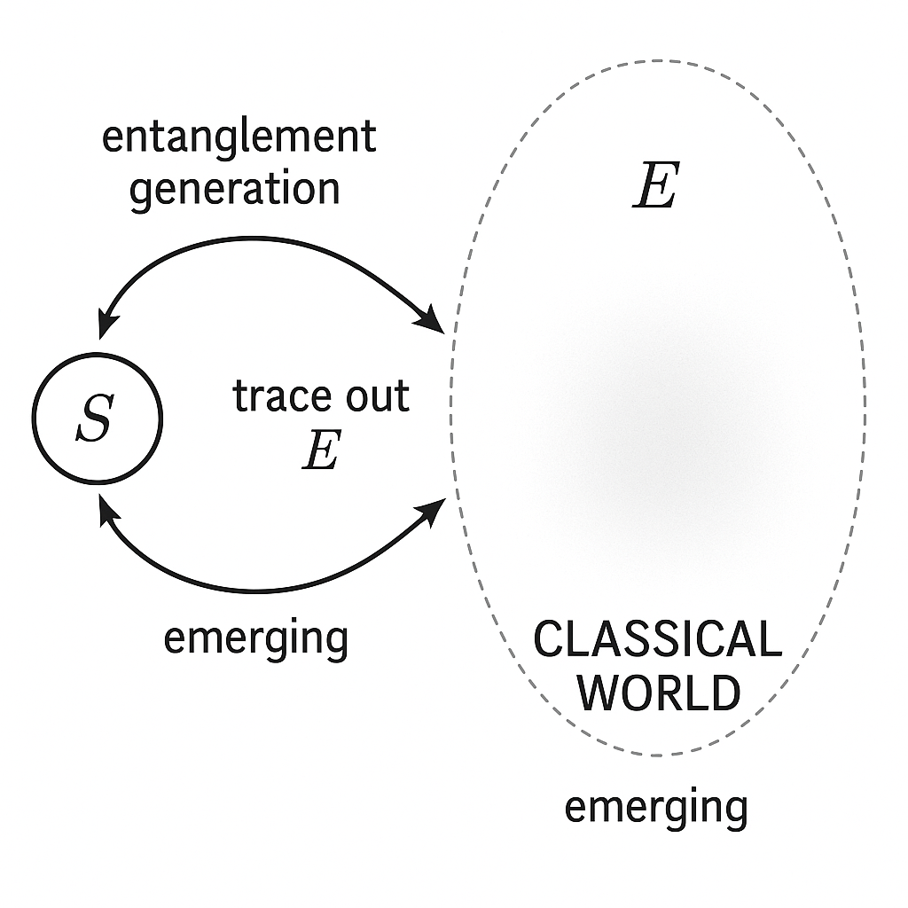
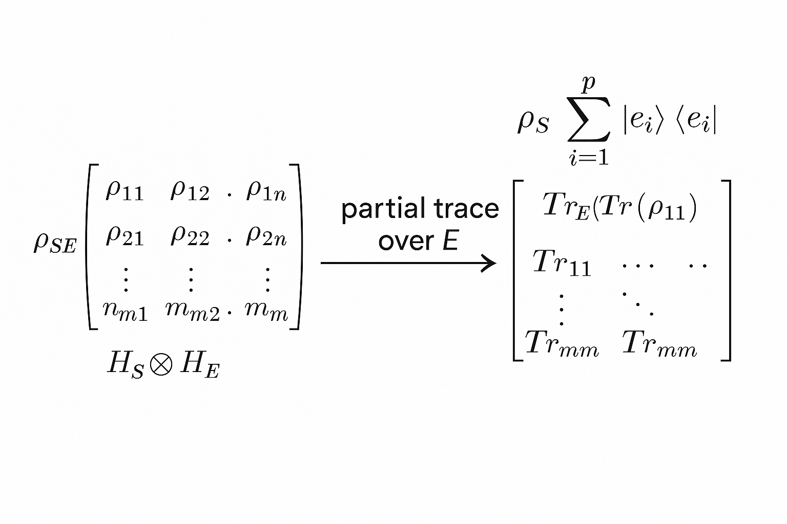
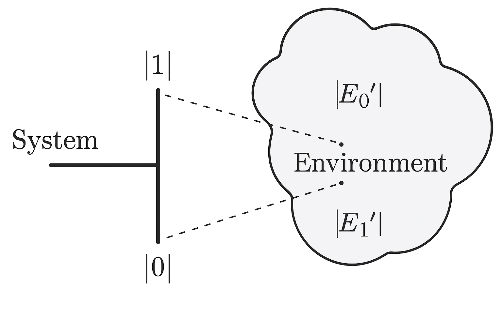
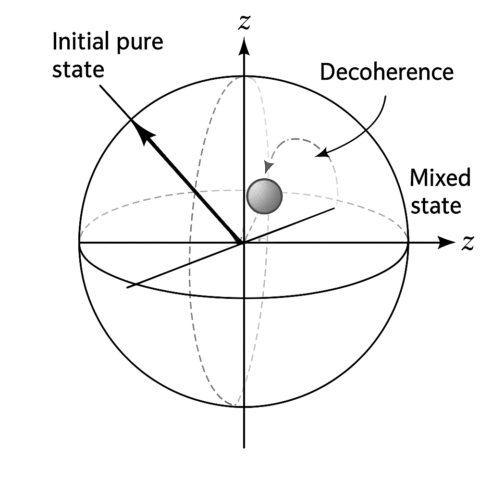
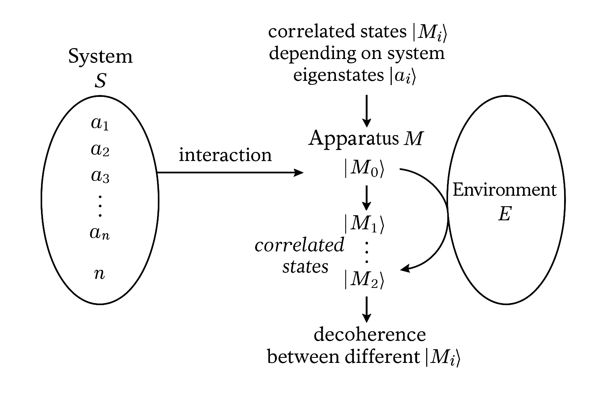
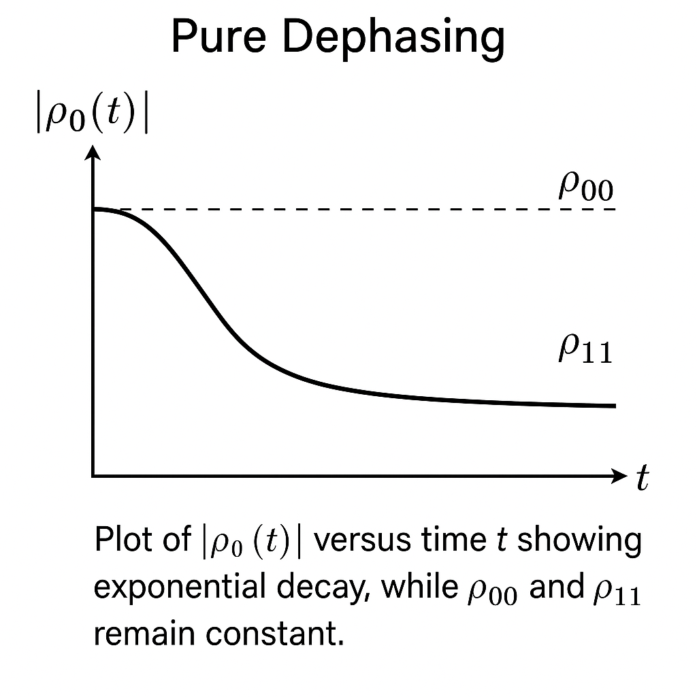
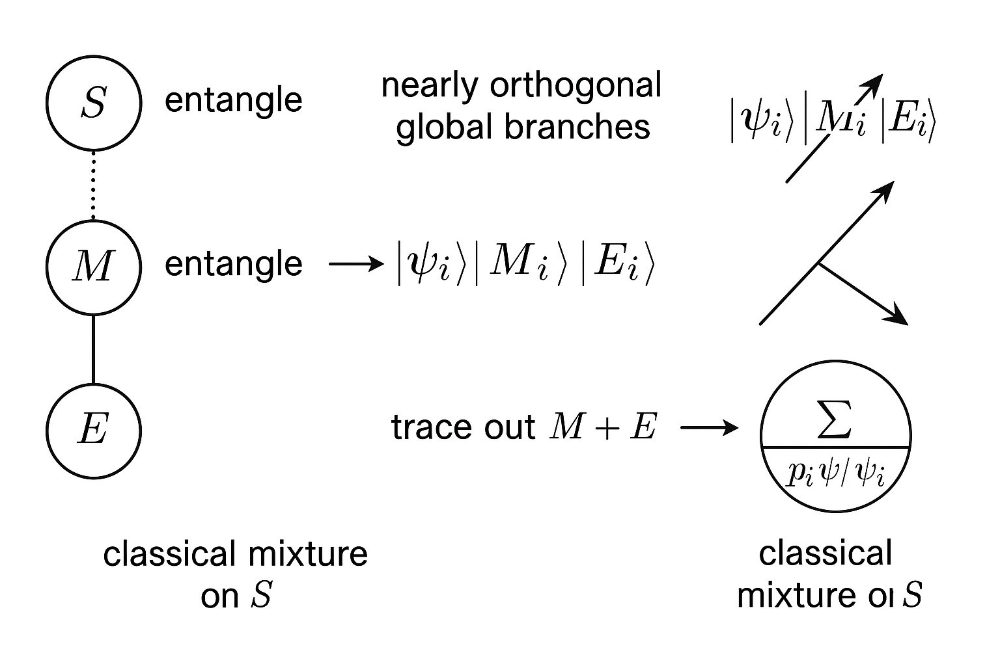
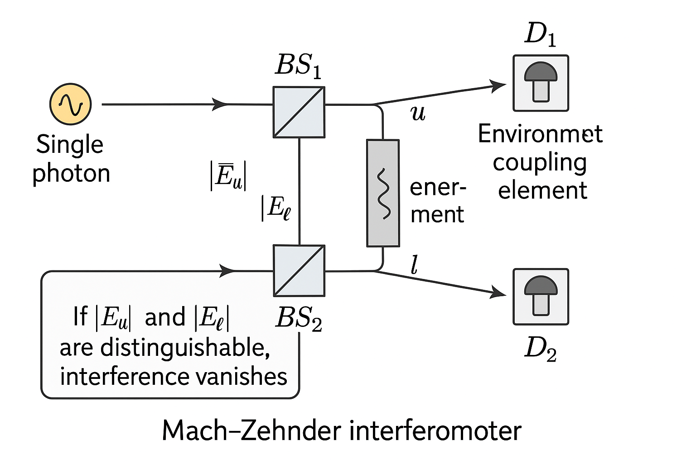

Generated by ChatGPT on 2025-12-16
逐字稿下載：ChatGPT_zh_L01_第_1_講_Decoherence主題_1.txt
完整音檔：
Segment 1:
Segment 2:
Segment 3:
Segment 4:
Segment 5:
Segment 6:
Segment 7:
Segment 8:
Segment 9:
Segment 10:
Segment 11:
本講作為整個「退相干 (Decoherence)」課程的開端，目標是從最基本的量子力學形式主義出發，嚴謹地定義何謂退相干，並透過最簡單的數學模型展示：
本講不會過度著墨於實驗技術，而是打好數學與概念基礎，為後續關於 Bohm 模型、弱測量、量子非破壞測量 (QND) 與 interaction-free measurement 等進階主題鋪路。
在標準的量子力學教科書中，封閉量子系統的時間演化由薛丁格方程主導： \[ i\hbar \frac{\partial}{\partial t} \, \lvert \psi(t) \rangle = \hat{H} \, \lvert \psi(t) \rangle, \] 其解可寫為單位算符 \( \hat{U}(t) = e^{-\frac{i}{\hbar}\hat{H}t} \) 的作用： \[ \lvert \psi(t) \rangle = \hat{U}(t) \lvert \psi(0) \rangle. \] 因此，純態在時間演化下仍為純態；狀態向量在希爾伯特空間中僅是「轉向」，不會自動變成「機率混合」。
然而，一旦談到 測量，標準教科書又引入了「波函數塌縮」公設：若測量可觀察量 \( \hat{A} \) 具有完備本徵態集 \( \{ \lvert a_i \rangle \} \)，則
此處「塌縮」並非由薛丁格方程所導出，而是附加的非單位、非線性過程。這導致著名的「測量問題」：
退相干理論提供一種不改變薛丁格方程的觀點：承認整個宇宙作為一個封閉系統仍然遵守單位演化，但我們所能實際操控與觀察的只是其中一小部分（子系統）。子系統與其環境的量子糾纏會導致：
這個過程稱為 退相干 (decoherence)。概念上，它並不引入真正的「塌縮」，而是透過「忽略環境」與「有效描述子系統」的方式，解釋為何宏觀世界呈現近似經典行為。

在退相干理論中，密度算符 (density operator) 是基本工具。定義：
態的純度可以用 \[ \gamma = \mathrm{Tr}(\hat{\rho}^2) \] 來衡量，純態有 \( \gamma = 1 \)，完全混合態在 \( d \)-維希爾伯特空間中則有 \( \gamma = \frac{1}{d} \)。
考慮一個複合系統 \( S + E \)（系統 + 環境），希爾伯特空間為 \[ \mathcal{H} = \mathcal{H}_S \otimes \mathcal{H}_E. \] 若整體處於密度算符 \( \hat{\rho}_{SE} \)，則只對系統 S 的有效描述由偏跡 (partial trace) 給出： \[ \hat{\rho}_S = \mathrm{Tr}_E \big( \hat{\rho}_{SE} \big). \] 相對地，環境的有效狀態為 \[ \hat{\rho}_E = \mathrm{Tr}_S \big( \hat{\rho}_{SE} \big). \]
偏跡的具體定義：選取環境的一組正交規一基底 \( \{ \lvert e_k \rangle \} \)，則 \[ \hat{\rho}_S = \sum_k \langle e_k \rvert \hat{\rho}_{SE} \lvert e_k \rangle. \] 類似地可定義對 \( S \) 的偏跡。直覺上，這就像是對環境所有可能狀態求「總和」，因為我們不觀測環境細節。

封閉系統 \( S + E \) 服從單位演化： \[ \hat{\rho}_{SE}(t) = \hat{U}(t) \hat{\rho}_{SE}(0) \hat{U}^\dagger(t), \] 其中 \( \hat{U}(t) = e^{-\frac{i}{\hbar}\hat{H} t} \)。對於子系統 \( S \)，其動力學為 \[ \hat{\rho}_S(t) = \mathrm{Tr}_E \Big[ \hat{U}(t) \hat{\rho}_{SE}(0) \hat{U}^\dagger(t) \Big]. \] 這一般不是由某個單一的哈密頓量在 \( \mathcal{H}_S \) 上的單位演化所給出，而是一個非單位的、通常是耗散 (dissipative) 或退相干 (dephasing) 的演化。
這裡已可看到退相干的要旨：
考慮最簡模型：系統 \( S \) 為一個量子比特，基底 \( \{ \lvert 0 \rangle, \lvert 1 \rangle \} \)；環境 \( E \) 可以是任意維數的希爾伯特空間。有一種常見的理想化互動：
\[ \begin{aligned} \lvert 0 \rangle_S \otimes \lvert E_0 \rangle_E &\xrightarrow{\hat{U}} \lvert 0 \rangle_S \otimes \lvert E_0' \rangle_E,\\ \lvert 1 \rangle_S \otimes \lvert E_0 \rangle_E &\xrightarrow{\hat{U}} \lvert 1 \rangle_S \otimes \lvert E_1' \rangle_E, \end{aligned} \]其中 \( \lvert E_0 \rangle \) 是環境初態，而不同的系統態會「刻印」在不同的環境態 \( \lvert E_0' \rangle, \lvert E_1' \rangle \) 上。這反映一種「測量式」互動：環境獲取關於系統在 \(\lvert 0 \rangle / \lvert 1 \rangle\) 基底上的資訊。

branch couples to environment state |E0'>, the |1> branch to |E1'>, illustrating environment becoming correlated with system state.">令系統初態為疊加態： \[ \lvert \psi_S(0) \rangle = \alpha \lvert 0 \rangle + \beta \lvert 1 \rangle,\quad \lvert \alpha \rvert^2 + \lvert \beta \rvert^2 = 1, \] 環境初態為 \( \lvert E_0 \rangle \)。整體初態： \[ \lvert \Psi_{SE}(0) \rangle = \big( \alpha \lvert 0 \rangle + \beta \lvert 1 \rangle \big) \otimes \lvert E_0 \rangle. \] 經過上述互動 \( \hat{U} \) 之後，整體態變為 \[ \lvert \Psi_{SE}(t) \rangle = \alpha \lvert 0 \rangle \otimes \lvert E_0'(t) \rangle + \beta \lvert 1 \rangle \otimes \lvert E_1'(t) \rangle, \] 其中我們顯式保留時間標記在環境態上。
請注意：此時整體仍然是純態，且演化完全是單位的。但從系統角度來看，發生了什麼？
計算整體密度算符： \[ \hat{\rho}_{SE}(t) = \lvert \Psi_{SE}(t) \rangle \langle \Psi_{SE}(t) \rvert. \] 將上式展開： \[ \begin{aligned} \hat{\rho}_{SE}(t) &= \lvert \alpha \rvert^2 \lvert 0 \rangle\langle 0 \rvert \otimes \lvert E_0'(t) \rangle\langle E_0'(t) \rvert + \lvert \beta \rvert^2 \lvert 1 \rangle\langle 1 \rvert \otimes \lvert E_1'(t) \rangle\langle E_1'(t) \rvert\\ &\quad + \alpha \beta^* \lvert 0 \rangle\langle 1 \rvert \otimes \lvert E_0'(t) \rangle\langle E_1'(t) \rvert + \alpha^* \beta \lvert 1 \rangle\langle 0 \rvert \otimes \lvert E_1'(t) \rangle\langle E_0'(t) \rvert. \end{aligned} \]
現在對環境取偏跡： \[ \hat{\rho}_S(t) = \mathrm{Tr}_E\big( \hat{\rho}_{SE}(t) \big). \] 利用 \[ \mathrm{Tr}_E\big( \lvert E_i \rangle\langle E_j \rvert \big) = \langle E_j \vert E_i \rangle, \] 可得 \[ \begin{aligned} \hat{\rho}_S(t) &= \lvert \alpha \rvert^2 \lvert 0 \rangle\langle 0 \rvert + \lvert \beta \rvert^2 \lvert 1 \rangle\langle 1 \rvert\\ &\quad + \alpha \beta^* \langle E_1'(t) \vert E_0'(t) \rangle \lvert 0 \rangle\langle 1 \rvert + \alpha^* \beta \langle E_0'(t) \vert E_1'(t) \rangle \lvert 1 \rangle\langle 0 \rvert. \end{aligned} \]
用矩陣形式（在 \(\{\lvert 0 \rangle, \lvert 1 \rangle\}\) 基底）表示： \[ \hat{\rho}_S(t) = \begin{pmatrix} \lvert \alpha \rvert^2 & \alpha \beta^* \, \langle E_1'(t) \vert E_0'(t) \rangle\\[4pt] \alpha^* \beta \, \langle E_0'(t) \vert E_1'(t) \rangle & \lvert \beta \rvert^2 \end{pmatrix}. \]
可以看到：對角元素 \(\lvert \alpha \rvert^2, \lvert \beta \rvert^2\) 不會因為這種理想化互動而改變（這對應於 相位退相干 (pure dephasing) 模型）；而非對角元素 被一個重疊因子 \[ \gamma(t) := \langle E_1'(t) \vert E_0'(t) \rangle \] 所乘。這個因子通常稱為「退相干因子」(decoherence factor)。若 \[ \lvert \gamma(t) \rvert \to 0, \] 則 off-diagonal 元會趨近於零，系統看起來就像是經典機率混合： \[ \hat{\rho}_S^{(\mathrm{decohered})} \approx \lvert \alpha \rvert^2 \lvert 0 \rangle\langle 0 \rvert + \lvert \beta \rvert^2 \lvert 1 \rangle\langle 1 \rvert. \]
退相干前（純態）： \[ \hat{\rho}_S(0) = \lvert \psi_S(0) \rangle\langle \psi_S(0) \rvert = \begin{pmatrix} \lvert \alpha \rvert^2 & \alpha \beta^*\\[4pt] \alpha^* \beta & \lvert \beta \rvert^2 \end{pmatrix}. \] 退相干後（有效混合態）： \[ \hat{\rho}_S(\infty) \approx \begin{pmatrix} \lvert \alpha \rvert^2 & 0\\[4pt] 0 & \lvert \beta \rvert^2 \end{pmatrix}. \] 兩者給出的能量測量（若哈密頓量對角於此基底）結果分佈是一樣的，但在干涉實驗中會有本質不同：

在更具體的模型中，環境態重疊 \( \gamma(t) = \langle E_1'(t) \vert E_0'(t) \rangle \) 一般會隨時間衰減： \[ \lvert \gamma(t) \rvert \approx e^{-t/\tau_D}, \] 其中 \( \tau_D \) 是典型的退相干時間 (decoherence time)。對於巨量自由度的環境（如熱浴、電磁場模式、空氣分子），通常 \[ \tau_D \ll \tau_{\mathrm{relax}}, \] 表示相干性喪失的時間尺度比能量弛豫還要快得多，這解釋了為何在宏觀世界幾乎看不到「薛丁格貓式疊加」。
上述模型形式上與「測量」非常類似。回想一個理想的投影測量（von Neumann 測量）：
若初態為疊加： \[ \lvert \psi_S \rangle = \sum_i c_i \lvert a_i \rangle, \] 則整體演化： \[ \Big( \sum_i c_i \lvert a_i \rangle \Big) \otimes \lvert M_0 \rangle \to \sum_i c_i \lvert a_i \rangle \otimes \lvert M_i \rangle. \] 這是一個糾纏態，並無塌縮。若再考慮人眼或環境對 \( M \) 的持續測量，最終對我們而言只會看到經典結果。退相干理論將環境 E 視為一連串或一大片隱含的「測量裝置」。

evolving to correlated states |Mi> depending on system eigenstates |ai>. Then an additional environment E interacts with M, leading to decoherence between different |Mi>.">在上述二能級模型中，可清楚看到：如果環境與系統在 \(\{\lvert 0 \rangle, \lvert 1 \rangle\}\) 基底上建立穩定的糾纏，則此基底就是所謂的指標基 (pointer basis)——在此基底中，退相干會快速消除疊加，而保留對角元素。這個基底由系統-環境互動的形式所決定。
更形式化地，若系統-環境互動哈密頓量具有型式： \[ \hat{H}_{\mathrm{int}} = \sum_i \lvert a_i \rangle\langle a_i \rvert \otimes \hat{B}_i, \] 則 \(\{\lvert a_i \rangle\}\) 通常會形成 pointer basis。在此基底中，\(\hat{\rho}_S\) 的對角元素相對穩定，而非對角元素快速衰減。這個現象可被視為一種由環境引起的「超選規則」 (environment-induced superselection, einselection)。
一個更嚴謹的觀點是：指標態 \(\lvert \pi_\alpha \rangle\) 是那些在演化下僅受相位與細微修正的態，且滿足某種穩定性準則。例如，若存在 CP 映射 \( \mathcal{E}_t \) 描述 \( S \) 的演化，則指標態滿足 \[ \mathcal{E}_t\big( \lvert \pi_\alpha \rangle\langle \pi_\alpha \rvert \big) \approx \lvert \pi_\alpha \rangle\langle \pi_\alpha \rvert \quad \text{(for all relevant } t). \] 而一旦初態為疊加： \[ \lvert \psi_S \rangle = \sum_\alpha c_\alpha \lvert \pi_\alpha \rangle, \] 則 \[ \mathcal{E}_t\big( \lvert \psi_S \rangle\langle \psi_S \rvert \big) \approx \sum_\alpha \lvert c_\alpha \rvert^2 \lvert \pi_\alpha \rangle\langle \pi_\alpha \rvert, \] 即退相干產生的經典混合。這與前面 2-level 模型的具體計算本質相同，只是推廣到更一般的情況。
在很多實際情況下，可以假設環境的記憶效應不那麼重要（Markov 近似），則系統的演化可由 Lindblad 主方程 描述： \[ \frac{d}{dt}\hat{\rho}_S(t) = -\frac{i}{\hbar} \big[ \hat{H}_S, \hat{\rho}_S(t) \big] + \mathcal{L}\big[\hat{\rho}_S(t)\big], \] 其中 dissipator \(\mathcal{L}\) 的泛形為 \[ \mathcal{L}[\hat{\rho}] = \sum_k \Big( \hat{L}_k \hat{\rho} \hat{L}_k^\dagger - \frac{1}{2} \big\{\hat{L}_k^\dagger \hat{L}_k, \hat{\rho}\big\} \Big), \] \(\{\cdot,\cdot\}\) 為反對易子，\(\hat{L}_k\) 稱為 Lindblad 算符或「躍遷算符」。
退相干（尤其是相位退相干）可以用特定形式的 \(\hat{L}_k\) 來表示。例如對一個二能級系統，取 \[ \hat{L} = \sqrt{\Gamma}\,\hat{\sigma}_z, \] 則 Lindblad 項成為 \[ \mathcal{L}[\hat{\rho}] = \Gamma\big( \hat{\sigma}_z \hat{\rho} \hat{\sigma}_z - \hat{\rho} \big), \] 可顯式導出 off-diagonal 元呈指數衰減。
在 \(\{\lvert 0 \rangle, \lvert 1 \rangle\}\) 基底，令密度矩陣為 \[ \hat{\rho}(t) = \begin{pmatrix} \rho_{00}(t) & \rho_{01}(t)\\ \rho_{10}(t) & \rho_{11}(t) \end{pmatrix}, \] 考慮僅相位退相干（不含哈密頓量，或在互動表象下）。主方程： \[ \frac{d}{dt}\hat{\rho}(t) = \Gamma\big( \hat{\sigma}_z \hat{\rho}(t) \hat{\sigma}_z - \hat{\rho}(t) \big). \] 計算右邊： \[ \hat{\sigma}_z = \begin{pmatrix} 1 & 0\\ 0 & -1 \end{pmatrix}, \quad \hat{\sigma}_z \hat{\rho} \hat{\sigma}_z = \begin{pmatrix} \rho_{00} & -\rho_{01}\\ -\rho_{10} & \rho_{11} \end{pmatrix}. \] 因此 \[ \mathcal{L}[\hat{\rho}] = \Gamma \left( \begin{pmatrix} \rho_{00} & -\rho_{01}\\ -\rho_{10} & \rho_{11} \end{pmatrix} - \begin{pmatrix} \rho_{00} & \rho_{01}\\ \rho_{10} & \rho_{11} \end{pmatrix} \right) = \Gamma \begin{pmatrix} 0 & -2\rho_{01}\\ -2\rho_{10} & 0 \end{pmatrix}. \] 因此元件方程為 \[ \frac{d}{dt}\rho_{00}(t) = 0,\quad \frac{d}{dt}\rho_{11}(t) = 0, \] \[ \frac{d}{dt}\rho_{01}(t) = -2\Gamma\, \rho_{01}(t),\quad \frac{d}{dt}\rho_{10}(t) = -2\Gamma\, \rho_{10}(t). \] 解為 \[ \rho_{00}(t) = \rho_{00}(0),\quad \rho_{11}(t) = \rho_{11}(0), \] \[ \rho_{01}(t) = \rho_{01}(0)\, e^{-2\Gamma t},\quad \rho_{10}(t) = \rho_{10}(0)\, e^{-2\Gamma t}. \] 這與前面 2-level 模型中的 \(\gamma(t) = \langle E_1'(t) \vert E_0'(t) \rangle\) 指數衰減是一致的物理圖像。

對於可觀察量 \( \hat{A} = \sum_i a_i \hat{\Pi}_i \)，其中 \(\hat{\Pi}_i = \lvert a_i \rangle\langle a_i \rvert\) 是投影算符。標準測量公設指出：
注意到這個映射 \[ \hat{\rho} \mapsto \hat{\rho}' = \sum_i \hat{\Pi}_i \hat{\rho} \hat{\Pi}_i \] 正是把 \(\hat{\rho}\) 在 \(\{\lvert a_i \rangle\}\) 基底上對角化的操作，消除 off-diagonal 元： \[ \rho_{ij}' = \begin{cases} \rho_{ii}, & i=j,\\ 0, & i\neq j. \end{cases} \] 這形式上等價於「瞬間、完全的退相干」。也就是說： 投影測量可以被視為退相干的極端極限。
更嚴謹地，考慮系統 \( S \)、測量裝置 \( M \)、環境 \( E \) 三者的聯合演化：
考慮整體密度算符並對 \(M,E\) 偏跡，若假設 \[ \langle M_j, E_j \vert M_i, E_i \rangle = \langle M_j \vert M_i \rangle \langle E_j \vert E_i \rangle \approx \delta_{ij}, \] 則系統的有效密度矩陣為 \[ \hat{\rho}_S \approx \sum_i \lvert c_i \rvert^2 \lvert a_i \rangle\langle a_i \rvert, \] 這正是投影測量後「結果未區分」的狀態。從這角度看，所謂塌縮，只是我們忽略了巨大的 \( M+E \) 自由度後，系統呈現出的有效退相干態。

|Mi>|Ei>, and tracing out M+E leaves a classical mixture on S.">從量子資訊角度，環境可以視為儲存著關於系統狀態之古典資訊的「記錄」。例如在上例中，環境態 \(\lvert E_i \rangle\) 對應系統在 \( \lvert a_i \rangle \) 的指標輸出；不同 \(i\) 的環境態幾乎正交，因而可被未來觀測者（或更多的「環境分塊」）以古典方式讀取。
這也為後續主題如「量子達爾文主義 (Quantum Darwinism)」鋪路：多重環境分塊各自攜帶冗餘的系統信息，形成「客觀經典實在」的基礎。本課程後續若有機會可進一步展開。
考慮 Mach–Zehnder 干涉儀：單光子進入第一個分束器 (BS1)，被分成兩路 \(\lvert u \rangle\) 與 \(\lvert l \rangle\)（上臂與下臂），在第二個分束器 (BS2) 重新匯合。忽略相位差時，理想輸出為：所有光子在探測器 \(D_1\) 而無光子在 \(D_2\)，這是干涉的結果。
用狀態向量描述，進入 BS1 後： \[ \lvert \psi \rangle = \frac{1}{\sqrt{2}}(\lvert u \rangle + \lvert l \rangle). \] 若兩臂光程完全相同，經 BS2 後得到： \[ \lvert \psi_{\mathrm{out}} \rangle = \lvert D_1 \rangle, \] 顯然無任何機率在 \(D_2\)。
若在某一臂上放置一個「哪一路探測器」（例如可與光子相互作用並改變其偏振、頻率、或與環境糾纏），則光子狀態會與環境糾纏： \[ \frac{1}{\sqrt{2}}(\lvert u \rangle + \lvert l \rangle) \otimes \lvert E_0 \rangle \to \frac{1}{\sqrt{2}}(\lvert u \rangle \otimes \lvert E_u \rangle + \lvert l \rangle \otimes \lvert E_l \rangle). \] 若 \( \langle E_u \vert E_l \rangle \approx 0 \)，則對環境取偏跡： \[ \hat{\rho}_{\text{path}} \approx \frac{1}{2} \big( \lvert u \rangle\langle u \rvert + \lvert l \rangle\langle l \rvert \big), \] 非對角項消失，干涉條紋完全消失；兩個探測器 \( D_1, D_2 \) 得到 \(50\%-50\%\) 的機率分佈。

and |El>, then recombination at BS2 with two detectors D1 and D2. Indicate that if |Eu> and |El> are distinguishable, interference vanishes.">這裡清楚顯示：
這個例子直接連結到日後要談的：
接下來的講次將在本講基礎上深入：
在進入這些主題之前，請同學務必對密度矩陣、偏跡、Lindblad 方程與簡單退相干模型有紮實掌握，因為所有進階概念都會反覆用到這些工具。